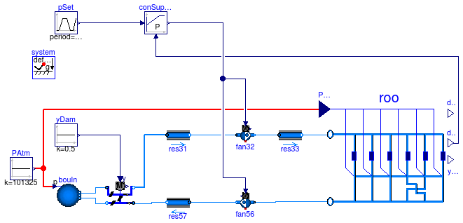

Variable air volume flow system of MIT building with continuous time control for static pressure reset
Extends from Modelica.Icons.ExamplesPackage (Icon for packages containing runnable examples).
| Name | Description |
|---|---|
| Variable air volume flow system of MIT building with CO2 control and continuous time control for static pressure reset | |
| Package with base classes for Buildings.Examples.VAVCO2 |
 Buildings.Examples.VAVCO2.VAVSystemCTControl
Buildings.Examples.VAVCO2.VAVSystemCTControl
Variable air volume flow system of MIT building with CO2 control and continuous time control for static pressure reset

This examples demonstrates the implementation of CO2 control for a variable air volume flow system. Each room has a CO2 source. Depending on the CO2 concentrations, the air dampers in the room open or close. The supply and return fans are controlled to provide a constant static pressure.
Note that this example does not control the room temperature and the heat flow through the building envelope. It only implements the CO2 source and the damper and fan control to maintain a CO2 concentration in the room below 700 PPM.
Because the building envelope is idealized as having no leakage, the supply and return fan are controlled so that they both receive the same control signal. If the return fan were controlled so that it tracks the volume flow rate of the supply fan, then there would be multiple solutions for the control signal as the split between pressure raise of the supply fan and pressure raise of the return fan is arbitrary.
Extends from Modelica.Icons.Example (Icon for runnable examples).
| Type | Name | Default | Description |
|---|---|---|---|
| MassFlowRate | mMIT_flow | roo.m0Tot_flow | Nominal mass flow rate of MIT system model as in ASHRAE 825-RP [kg/s] |
| Pressure | dpSuiSup_nominal | 95 | Pressure drop supply air leg with splitters of one suite (obtained from simulation) [Pa] |
| Pressure | dpSuiRet_nominal | 233 | Pressure drop return air leg with splitters of one suite (obtained from simulation) [Pa] |
| Pressure | dpFanSupMIT_nominal | 1050 | Pressure increase over supply fan in MIT system model as in ASHRAE 825-RP (obtained from simulation) [Pa] |
| Pressure | dpFanRetMIT_nominal | 347 | Pressure increase over supply fan in MIT system model as in ASHRAE 825-RP (obtained from simulation) [Pa] |
| Real | scaM_flow | 1 | Scaling factor for mass flow rate |
| Real | scaDpFanSup_nominal | 1 | Scaling factor for supply fan pressure lift with NSui number of suites |
| Real | scaDpFanRet_nominal | 1 | Scaling factor for supply fan pressure lift with NSui number of suites |